Targeted Compression
A standalone pipeline targeting strict platform upload limits. It intelligently probes, calculates optimal Bits-Per-Pixel, splits the file, and runs multithreaded hardware encoding.
Discord DMs, Group DMs, and Servers with less than Level 2 boosts.
Optimized for Discord Server Level 2 Boost environments.
Maximized for Discord Server Level 3 Boost limits.
Designed for the expanded limits of Discord Nitro subscribers.
Drag & Drop Demonstration
The Execution Pipeline
1. Input
Drag & drop a video onto the preset executable.
2. Probe
ffprobe extracts duration, resolution, and fps.
3. Smart Split
Divides video based on 50% bit density mark to balance thread load.
4. Dual Encode
Two concurrent FFmpeg instances process chunks in parallel.
Pipeline Dataflow Architecture
Physical tracing of compressed NAL packets, raw pixel frames, and presentation timestamps across Storage, Host System Memory, the PCIe interconnect, and dedicated GPU silicon.
Smart Split Worker Processing

Line-by-line iterator tracks cumulative packet bytes and keyframe timestamps (flags=K). Zero pixels are decoded.
Keyframe alignment prevents corrupt B-frames or video freezing at cut boundaries.
Worker 1 and 2 run simultaneously on separate subprocesses. Concat demuxer stitches slices without re-encoding, placing the moov box at byte 32.
ffprobe streams compressed packet headers line-by-line via CSV pipe (packet=pts_time,size,flags). Zero frames are decoded, keeping RAM under 10 MB.
The accumulator tracks cumulative byte weight and selects the nearest keyframe at exactly 50% data load, giving both workers equal computational work and preventing thread starvation.
Worker 1 encodes [0.0s → Split], Worker 2 encodes [Split → EOF]. Worker 2 resets start timestamps to 0.0s via -avoid_negative_ts make_zero for clean stitching.
FFmpeg concat demuxer (-c copy) joins bitstreams in sub-seconds without GPU re-encoding, relocating the index atom (moov box) to byte 32 for immediate web streaming.
Hardware Native Unscaled (1080p60)
Frames are demuxed from storage and streamed as compressed NAL packets across PCIe into GPU VRAM. NVDEC decodes into CUDA surfaces, the frame scaling filter is completely bypassed (zero software pixel copies), and NVENC encodes directly on-chip. Only compressed bitstream traverses PCIe.
When downscaling is triggered by the BPP calculator (e.g. 1080p to 720p), keeping the filter on the CPU causes a massive 64 GB PCIe roundtrip. Transitioning to scale_cuda allows the GPU to resize frames in VRAM, recovering native 545 MB PCIe efficiency while preserving quality.
Physical PCIe Transfer Paths
Path 1: CPU Software Decode Bottleneck (-hwaccel cuda omitted)

Path 2: Current Hybrid Downscale Pipeline (NVDEC Decode + CPU Lanczos Scaling)

Path 3: True Zero-Copy Pipeline (scale_cuda On-Chip GPU Scaling)

Quantitative Architectural Matrix
| Metric | v1.1.5 (Downscaled) | Intermediate v1.1.6-pre | Current Implementation | Potential scale_cuda |
|---|---|---|---|---|
| Passes Executed | 2 passes (fake pass 1) | 1 pass | 1 pass | 1 pass |
| Video Decode Location | GPU NVDEC (x2) | CPU Software (avcodec) | GPU NVDEC (x1) | GPU NVDEC (x1) |
| Scaling Location | CPU Software (x2) | CPU Software | CPU Software (flags=lanczos) | GPU CUDA Cores (scale_cuda) |
| PCIe Bus Volume | ~128 GB (2x roundtrips) | ~19.74 GB (H2D scaled) | ~64.41 GB (1x roundtrip) | 0.55 GB (545 MB // -99.1%) |
| Host System RAM I/O | > 200 GB | > 60 GB | ~64 GB | < 1 GB (Near-Zero I/O) |
| CPU Utilization | 43% | 91% (Starved NVENC) | ~30% - 40% | < 5% (Idle Host) |
| GPU Decode Engine | ~88% | 0% (Idle) | ~88% | ~88% |
| GPU 3D / CUDA Engine | ~91% | ~4% | ~5% - 10% | ~35% - 50% (scale_cuda) |
| Wall-Clock Encode Time | 37.81 s | 23.22 s (CPU bound) | 22.4 s - 23.0 s | ~15 s - 18 s (est.) |
Parallel Processing Engine
By dividing the video at a calculated keyframe and utilizing Python's threading to run multiple FFmpeg subprocesses simultaneously, the tool significantly reduces encoding times on modern multi-core systems and hardware encoders.
Progress Aggregation
A thread-safe ProgressTracker class parses stderr from both FFmpeg instances, merging ETA and speed metrics into a unified console output.
Parallel Split Encoding
Hardware encoders execute a dual-worker parallel split pipeline with on-chip rate control and hardware lookahead for maximum speed and bitrate compliance.
Safe Concatenation
Chunks are stitched using FFmpeg's concat demuxer with +faststart, relocating the moov atom to the front for progressive streaming without re-encoding.
Parallel vs Serial Efficiency
Abstract relative duration showing multithreaded efficiency.
BPP Scaling Logic Simulator
To prevent extreme pixelation, the script ensures the target bitrate yields a Bits-Per-Pixel (BPP) ≥ 0.04. If it fails, the script automatically tests lower resolutions and framerates. Use this calculator to see how the script decides whether to scale down a video based on your inputs.
Source Video Profile
Logic Candidates
Threshold: BPP >= 0.04| Resolution | FPS | Calculated BPP | Status |
|---|
Hardware Priority Matrix
The tool uses a dynamic fallback chain. It tests hardware availability with a dummy encode and selects the fastest valid encoder before falling back to CPU-based rendering. Select an OS to view its priority mapping.